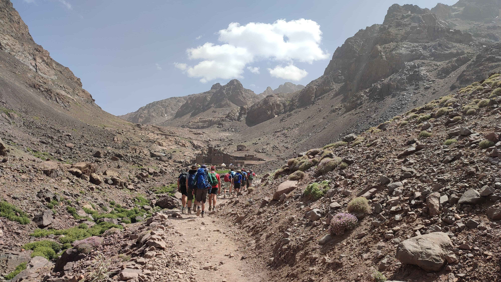

Mount Toubkal Trek, Morocco.
I was employed by a UK company to lead a group of young people to the top of Mount Toubkal, the tallest mountain in North Africa at 4167m.
Arriving in Marrakech in 45 degree heat, we travelled 2 hours south to the town of Imlil, which is a typical starting point for the trek.
On the morning of our first full day we visited a nearby village for a pre-arranged football match, playing 5-a-side on a pitch that was marked out by the slope of the mountainside. The Moroccan team were skilful, passing and moving with one or two touches, and seemed unaccustomed to being bundled into by clumsy giants. Our best chance at scoring came from long throws and headers (it became known as the Stoke approach), and we cannoned the ball down the mountain side so many times that the locals stationed a few substitutes down there for a quicker return.
Imlil is 2000m above sea level and in the afternoon we went for an acclimatisation hike. Many Moroccans were celebrating the Islamic festival of Eid, and as we finished the hike and returned to town we could hear bells, chanting and screaming. We were approached by a man dressed in a goat skin, and learned that it’s a regional tradition for a few townsfolk to wear the goat skin and chase the local villagers. Being caught was thought of as bad luck, and yet many of the villagers ran away in a teasing manner suggesting they wanted to get caught, at which point the goat man started beating them with varying degrees of enthusiasm with a rubber pipe. The goat man was kind enough to stop and pose for a picture, and the smell was exactly what you would expect from a man who had been running up and down the mountainside in 30 degree heat dressed in a freshly skinned goat.
The next day we set out for base camp, a 12km hike with 1000m elevation. Our Moroccan guide Ibrahim stressed the importance of walking slow, particularly during the uphills, and the team arrived at 5pm, tired and hungry. In addition to Ibrahim, myself, and the group, we had 2 muleteers who rode the mules that carried our big bags up the mountainside (we carried day packs, with water, snacks, sun protection etc.). We also had a cook in the team, and as we arrived into camp he served tagine, rice, beans, salads, bread, and tea. The food was fresh and fantastic.
Alarms were set at 5am for the summit day. We were at 3210m elevation, and had an additional 1000m of ascent which was sustained across the 6km route. Altitude sickness can occur above 3500m, and the team were told to be vigilant of headaches, sickness, or dizziness. The temperature was much cooler, the morning silent and still, and it was a tiring but wonderful hike to the summit.
On the way down Ibrahim, dressed in trainers, led us down a steep scree slope. He role modelled an innovative approach to downhill hiking, the scree slope sprint, which many of the young people attempted to recreate. To the great disappointment of all I explained we would be walking down, and we made it back to basecamp safe and hungry.
Many groups will summit and then continue down past Base Camp and back to Imlil, which can be a long and exhausting day. Our plan was more conservative and the group was happy to arrive at camp and stop hiking. After some lunch and a nap, a game of cricket was organised with a barrel and a plank of wood that had been foraged nearby. Ibrahim said that in 30 years of guiding the mountain he had never seen anyone play cricket at Base Camp.
The next day we hiked out, took a shuttle to Marrakech and enjoyed a celebratory dinner before flying back home.
It was a great trip, wonderful landscapes, fresh, unprocessed food, and I was happy and satisfied that everyone made it to the top and down without incident. It’s a challenging hike and some of the group did experience shortness of breath and a mild headache near the summit, but providing hikers have a base level of fitness and the determination to get up, it’s a relatively accessible 4000m peak.
Adhuc quaerendum est ne, vis ut harum tantas noluisse, id suas iisque mei. Nec te inani ponderum vulputate, facilisi expetenda has et. Iudico dictas scriptorem an vim, ei alia mentitum est, ne has voluptua praesent.
Sumo euismod dissentiunt ne sit, ad eos iudico qualisque adversarium, tota falli et mei. Esse euismod urbanitas ut sed, et duo scaevola pericula splendide. Primis veritus contentiones nec ad, nec et tantas semper delicatissimi.
Duis sed odio sit amet nibh vulputate cursus a sit amet mauris. Morbi accumsan ipsum velit. Duis sed odio sit amet nibh vulputate cursus a sit amet mauris
Investigationes demonstraverunt lectores legere me lius quod ii legunt saepius. Claritas est etiam processus dynamicus, qui sequitur mutationem consuetudium lectorum.